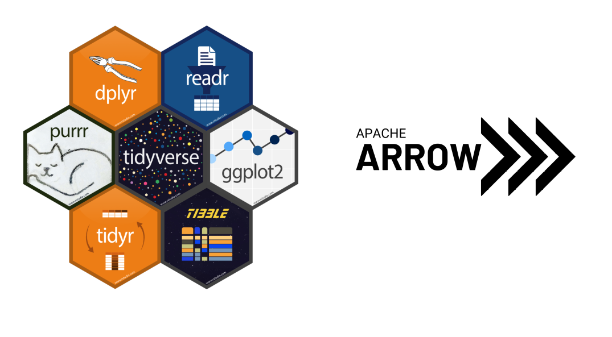
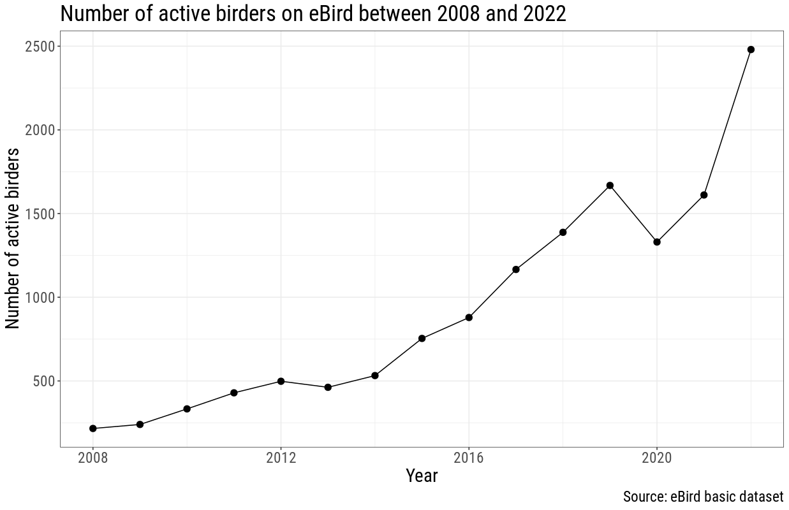

How to Manage and Process Big Datasets - an Example with eBird Data
Journal Club - February 23th
Who is this guy?
- Quantitative ecologist and a conservation biologist
- Data-driven approaches to tackle biodiversity conservation problems
- NaturaConnect - support the development of a resilient ecological network of conserved areas across Europe
What are Big Data?
"Big data primarily refers to data sets that are too large or complex to be dealt with by traditional data-processing application software."
Wikipedia
Remote sensing data

Logger data
Citizen science projects
Have you ever tried to load an 8 GB .csv/.txt file into R?
Why though?
"The tools you learn in this book will easily handle (...) 1-2 Gb of data. If you’re routinely working with larger data (10-100 Gb, say), you should learn *something else*"
R for Data Science (2nd edition) (Wickham & Grolemund)
Apache Arrow
 Source: Doing More with Data: An Introduction to Arrow for R Users (Danielle Navarro)
Source: Doing More with Data: An Introduction to Arrow for R Users (Danielle Navarro)
Tidyverse + Arrow
How did COVID-19 lockdowns affect birding in Portugal?
WTF is eBird?
eBird Basic Dataset (EBD) (PT)
- All eBird checklists
- Beginning of time - December 2022
- 7.2 GB .txt file
- 8.89 million rows
Install Apache Arrow
install.packages("arrow")
Import the dataset
Convert to Parquet format
arrow::write_dataset(data_export, "ebird_parquet",
format="parquet")
Import Parquet dataset
data<- open_dataset("ebird_parquet")
data<-data %>%
mutate(year=lubdridate::year(`OBSERVATION DATE`))
How did the number of eBird checklists change between 2008 and 2022? Were there fewer eBird lists in 2020 and in 2021?
Lockdown stringency index in Portugal (2020-2022)
eBird checklists between 2008 and 2022
data %>% select(year,`SAMPLING EVENT IDENTIFIER`) %>%
group_by(year) %>%
summarise(n_list= n_distinct(`SAMPLING EVENT IDENTIFIER`)) %>%
filter(year>=2008 ) %>% collect() %>%
ggplot(aes(y=n_list,x=year))+geom_point(size=3)+
labs(y="Number of eBird lists",
x="Year",
title="Number of eBird lists submitted between 2008 and 2022 in Portugal",
caption="Source: eBird basic dataset (PT)")+
theme_bw()+ theme(text = element_text(size = 20,family="roboto condensed"))
Calculate the number of eBird checklists between 2008 and 2022 and make a plot
Ok, but what about the number of active birders?
Number of active birders between 2008 and 2022
data %>% select(year,`OBSERVER ID`) %>%
group_by(year) %>%
summarise(n_list= n_distinct(`OBSERVER ID`)) %>%
filter(year>=2008) %>% collect() %>%
ggplot(aes(y=n_list,x=year))+
geom_point(size=3)+
labs(y="Number of active birders",
x="Year",
title="Number of active birders on eBird between 2008 and 2022",
caption="Source: eBird basic dataset")+
theme_bw()+
theme(text = element_text(size = 20,family="roboto condensed"))
Number of active birders between 2008 and 2022
Scientific conclusions
- There were fewer active birders in 2020 and 2021
- Those that remained active...doubled down on birding
Technical conclusion (I)
- Apache Arrow is FAST
- All the select(), filter() and summarise() statements tooks seconds instead of minutes or hours
- Plotting the data also took seconds
Technical conclusion (II)
Thank God it's over